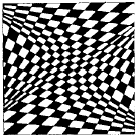
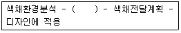
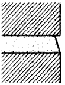

실내건축산업기사 (2003-08-10 기출문제)
1과목: 실내디자인론
1. 상점의 공간구성에서 판매부분에 속하는 것은?
- 종업원의 후생복지를 목적으로 하는 부분
- 상품을 하역하거나 발송하며 보관하는데 필요한 부분
- 진열장, 판매대 등 상품이 전시되는 부분
- 사무실 등 영업에 관련된 업무를 일반적으로 취급하는 부분
(정답률: 90%)

2. 개방형(open plan) 사무공간에 있어서 평면계획의 기준이 되는 것은?
- 책상배치
- 설비시스템
- 조명의 분포
- 출입구의 위치
(정답률: 65%)
3. 시스템가구에 관한 설명 중 옳지 않은 것은?
- 건물, 가구, 인간과의 상호관계를 고려하여 치수를 산출한다.
- 건물의 구조부재, 공간구성 요소들과 함께 표준화되어 가변성이 적다.
- 한 가구는 여러 유니트로 구성되어 모든 치수가 규격화, 모듈화 된다.
- 부엌가구, 사무용가구, 수납가구들에 적용된다.
(정답률: 63%)
4. 인간의 신체를 기준으로 하여 측정되는 척도는?
- 휴먼팩터(Human factor)
- 휴먼스케일(Human scale)
- 어거노믹스(Ergonomics)
- 휴먼바디(Human body)
(정답률: 85%)
5. 이질의 각 구성요소들이 전체로서 동일한 이미지를 갖게 하는 것으로, 변화와 함께 모든 조형에 대한 미의 근원이 되는 원리는?
- 대비(contrast)
- 통일(unity)
- 강조(emphasis)
- 균형(balance)
(정답률: 65%)
6. 디자인요소인 선에 관한 설명으로 알맞지 않은 것은?
- 사선은 기울기가 있는 선으로 약동감을 느끼게 한다.
- 곡선은 유연, 우아, 풍요, 여성스런 느낌을 주며 기하곡선과 자유곡선이 있다.
- 수직선은 구조적인 높이와 존엄성을 느끼게 한다.
- 수평선은 방향성과 생동감을 느끼게 한다.
(정답률: 66%)
7. 실내를 구성하는 기본요소 중 바닥의 기능에 관한 설명으로 가장 옳지 않은 것은?
- 공간의 영역을 조정할 수 있다.
- 사람과 물건을 지지한다.
- 외부로부터 추위와 습기를 차단한다.
- 수평방향을 차단하여 공간을 형성한다.
(정답률: 35%)
8. 실내디자인의 과정을 조사분석단계와 디자인단계로 나눌때 디자인단계에 속하지 않는 것은?
- 디자인의 목적과 범위설정
- 디자인의 개념 및 방향설정
- 아이디어의 시각화 및 대안의 설정
- 대안의 평가 및 최종안의 결정
(정답률: 33%)
9. 상점의 파사드(facade) 구성요소와 관계가 없는 것은?
- 간판
- 네온
- 쇼윈도우
- 카운터
(정답률: 74%)
10. 실내디자인 프로세스의 작업단계별 순서로 가장 알맞은 것은?
- 구상 - 설계 - 기획 - 구현 - 완공
- 기획 - 설계 - 구상 - 구현 - 완공
- 구상 - 기획 - 구현 - 설계 - 완공
- 기획 - 구상 - 설계 - 구현 - 완공
(정답률: 63%)
11. 액세서리에 대한 설명과 가장 거리가 먼 것은?
- 강조하고 싶은 요소들을 보완해 주는 물건이다.
- 액세서리에는 장식물, 회화, 공예품 등이 있다.
- 공간의 분위기를 생기있게 하는 실내디자인의 최종작업이다.
- 액세서리는 생활에 있어서의 실질적인 기능과는 무관하다.
(정답률: 67%)
12. 가구배치시 유의할 사항으로 거리가 먼 것은?
- 가구는 실의 중심부에 배치하여 돋보이도록 한다.
- 사용목적과 행위에 맞는 가구배치를 해야 한다.
- 전체공간의 스케일과 시각적, 심리적 균형을 이루도록 한다.
- 문이나 창문이 있을 경우 높이를 고려한다.
(정답률: 92%)
13. 쇼윈도우 조명계획에 대한 설명 중 가장 부적당한 것은?
- 근접한 타 상점의 조도, 통과하는 보행자의 속도에 상응하여 주목성 있는 조도를 결정한다.
- 상점 내부의 전체 조명보다 2~4배 정도 높은 조도로 한다.
- 진열상품의 입체감은 밝은 하이라이트 부분과 그림자부분이 명확히 구분되어 형상의 입체감이 강조되도록 한다.
- 광원이 보는 사람의 눈에 직접 보이게 한다.
(정답률: 75%)
14. 황금비례에 대한 설명 중 맞는 것은?
- 황금비례는 종교건물에서만 사용하는 비례이다.
- 고대 그리스인들이 창안한 기하학적 분할 방식이다.
- 선이나 면적을 나눌 때 큰 부분과 작은 부분의 비율이 작은 부분과 전체에 대한 비율과 같은 것이다.
- 1 : 3.14의 비율을 갖는다.
(정답률: 64%)
15. 문과 창문에 관한 설명으로 옳지 않은 것은?
- 공기와 빛을 통과시켜 통풍과 채광을 가능하게 한다.
- 인접된 공간을 연결시킨다.
- 동선에 영향을 주지 않는다.
- 전망과 프라이버시의 확보가 가능하다.
(정답률: 83%)
16. 인간의 공간적 상관관계에 관한 이론 즉, 근거리학(Proxemics)에서 사회적 영역(Social zone)은?
- 45㎝ 이내
- 45㎝∼1.2m
- 1.2∼3.6m
- 3.6m 이상
(정답률: 38%)
17. 다음 중 실내디자인의 작업에 포함되는 세부영역이 아닌것은?
- 건축계획
- 실내기획
- 디스플레이
- 가구디자인
(정답률: 64%)
18. 실내디자인의 개념에 대한 설명으로 옳지 않은 것은?
- 실내디자인은 건축과 인간을 연결시켜주는 물리적 관계를 가진다.
- 실내디자인은 인간공학적인 측면에서 배려되어야 한다.
- 실내공간은 기능적으로 조금 불편하더라도 심미적 디자인이 우선되어야 한다
- 생활목적에 따라 공간계획을 하여야 한다.
(정답률: 76%)
19. 시각적인 무게나 시선을 끄는 정도는 같으나 그 형태나 구성이 다른 경우의 균형을 무엇이라고 하는가?
- 정형 균형
- 좌우 불균형
- 대칭적 균형
- 비대칭형 균형
(정답률: 75%)
20. 게슈탈트 이론중 다음 그림은 무엇에 관한 그림인가?

- 폐쇄성
- 근접성
- 유사성
- 반전도형
(정답률: 52%)
2과목: 색채 및 인간공학
21. 인간-기계체계(Man-Machine system)에서 인간의 특성이 아닌 것은?
- 자극입력의 한계성
- 경험의 축적활용
- 대량 정보의 신속한 처리능력
- 해답의 일반화 시도
(정답률: 76%)
22. 육체활동에 따른 에너지 소비량이 작은 것부터 크기 순으로 잘 정리된 것은?
- 수면 ＜ 선자세 ＜ 앉은자세 ＜ 걷기
- 앉은자세 ＜ 수면 ＜ 선자세 ＜ 걷기
- 수면 ＜ 앉은자세 ＜ 걷기 ＜ 선자세
- 수면 ＜ 앉은자세 ＜ 선자세 ＜ 걷기
(정답률: 80%)
23. 색채조화의 일반적인 원리에 대한 설명 중 잘못된 것은?
- 두색 이상의 선택이 명료한 배색이 조화가 된다.
- 질서있는 계획에 따라 선택된 색채들에서 조화가 생긴다.
- 배색된 색채들이 서로 공통되는 상태와 속성을 가질 때는 그 색채군은 조화되지 않는다.
- 가장 가까운 색채끼리의 배색이 친근감을 주는 조화를 느끼게 한다.
(정답률: 80%)
24. 태양의 분광 스펙트럼 상에 존재하지 않는 색은?
- 노랑
- 남색
- 녹색
- 회색
(정답률: 77%)
25. 다음 중 시끄러운 파티에서도 한 사람과 대화할 수 있는 이유는 다음 중 어떤 능력에 의한 것인가?
- 선택 주의(selective attention)
- 집중 주의(focused attention)
- 분할 주의(divided attention)
- 지속 주의(sustained attention)
(정답률: 71%)
26. 우리나라 KS표준 색표이며 색채 교육용으로 채택된 표색계는?
- 먼셀 표색계
- 오스트 발트 표색계
- 문.스펜서 표색계
- 쟈드 표색계
(정답률: 83%)
27. 색의 진출· 후퇴에 관한 일반적인 성질 중 가장 관계가 먼 것은?
- 난색계는 한색계보다 진출성이 있다.
- 배경색의 채도가 낮은 것에 대하여 높은색은 진출 한다.
- 배경색과의 명도차가 큰 밝은 색은 진출한다.
- 배경색이 무채색일 때 가장 진출성이 크다.
(정답률: 52%)
28. 다음 중 가장 화려한 느낌을 주기에 적절한 배색 사례는?
- 노랑-주황-흰색
- 녹색-노랑-파랑
- 빨강-파랑-회색
- 빨강-노랑-파랑
(정답률: 47%)
29. 벽에 설치하는 전화기를 디자인할 때 고려해야 될 사항중 적합하지 못한 것은?
- 동전투입구는 수직보다 수평으로 되어 있는 것이 이상적이다.
- 성인의 경우 눈높이와 허리선사이에 설치하는 것이 이상적이다.
- 장애자용 전화는 전화박스의 정문과 평행하도록 설치해야 한다.
- 휠체어에 탄 사람이 사용하기 용이한 전화기의 높이는 바닥에서 전화기의 꼭대기 부분이 120㎝보다 높이 있으면 안된다.
(정답률: 65%)
30. 소음을 통제하는 방법으로 적절치 않은 것은?
- 소음을 격리시킨다.
- 귀마개를 착용한다.
- 기계를 적절하게 배치한다.
- 훈련에 의해서 적응력을 향상시킨다.
(정답률: 79%)
31. 다음 중 쾌적한 수면을 위한 조건으로 가장 부적합한 것은?
- 과식하지 말 것
- 소음을 방지할 것
- 체온을 적당하게 유지할 것
- 뜨거운 물에 목욕할 것
(정답률: 69%)
32. 다음 색채연상에 관한 내용 중 올바른 것은?
- 흰색 : 상쾌, 청결, 젊음, 시원
- 녹색 : 명랑, 온화, 화려, 환희
- 연두 : 우울, 고상, 세련, 추함
- 청자 : 불안, 침울, 고독, 냉정
(정답률: 55%)
33. 각각 같은 양의 물감을 혼합하였을 때 회색조가 생기는 경우가 아닌 것은?
- 노랑+보라
- 파랑+흰색
- 빨강+녹색
- 흰색+회색
(정답률: 66%)
34. 다음 기업색채 계획의 순서 중 괄호속에 알맞는 내용은?

- 소비계층 선택
- 색채심리 분석
- 생산심리 분석
- 디자인 활동 개시
(정답률: 74%)
35. 시각이 우리들에게 알려주지 않는 것은?
- 물체의 모양
- 에너지
- 색
- 밝기와 움직임
(정답률: 83%)
36. 다음 중 동일한 작업 시 에너지 소비량에 영향을 끼치는 인자가 아닌 것은?
- 작업방법
- 작업자세
- 심박수
- 작업속도
(정답률: 74%)
37. 난색계통의 색상에 더욱 흥분감을 주기 위한 명도와 채도의 조치는?
- 고명도, 고채도
- 고명도, 저채도
- 저명도, 고채도
- 저명도, 저채도
(정답률: 60%)
38. 다음 중 밝은 바탕에 진한 글씨를 쓸 경우에 가장 바람직한 획의 굵기 대 높이비는?
- 1 : 2
- 1 : 4
- 1 : 8
- 1 : 12
(정답률: 52%)
39. 색 또는 밝기의 항상성(恒常性;constancy)에 대한 설명 중 틀린 것은?
- 밝기의 항상성은 밝은 물건쪽이 강하다.
- 색의 항상성은 색광시야가 크면 강하다.
- 관찰시간이 짧으면 항상성이 약하다.
- 조명이 단색광이고 가까이 있으면 항상성이 강하다.
(정답률: 43%)
40. 나이가 많아짐에 따라 귀의 감도는 어떻게 되는가?
- 높은 소리에 대한 감도가 떨어진다.
- 높은 소리에 대한 감도는 좋다.
- 낮은 소리에 대한 감도가 떨어진다.
- 높고 낮은 소리에 대한 감도는 같다.
(정답률: 37%)
3과목: 건축재료
41. 벽, 기둥 등의 모서리를 보호하기 위하여 미장바름질을 할 때 붙이는 보호용 철물은?
- 줄눈대
- 코너비드
- 드라이브 핀
- 조이너
(정답률: 86%)
42. 투사광선의 방향을 변화시키거나 집중 또는 확산시킬 목적으로 만든 이형 유리제품으로 주로 지하실 또는 지붕 등의 채광용으로 사용되는 것은?
- 프리즘 글라스
- 복층 유리
- 망입 유리
- 스테인드 글라스
(정답률: 66%)
43. 목재의 일반적 특성에 관한 기술 중 옳지 않은 것은?
- 동일 함수율일 때는 비중이 클수록 열전도율이 크다.
- 목질부의 수축팽창에 따른 변형정도는 널결면이 가장 크고, 곧은결면, 목재의 섬유방향 순이다.
- 비중이 작은 것이 비중이 큰 것보다 산 및 알칼리에 대한 저항력이 크다.
- 옹이가 발생된 목질부는 가공이 곤란하며, 외관을 손상시키지만, 인장 및 휨 강도는 증가된다.
(정답률: 43%)
44. 다음 중 수경성 미장재료가 아닌 것은?
- 보드용 석고 플라스터
- 돌로마이트 플라스터
- 경석고 플라스터
- 시멘트 모르터
(정답률: 53%)
45. 각종 합성수지의 성질에 대한 설명으로 틀린 것은?
- 아크릴수지는 투명도가 높고, 열팽창성이 낮아 채광판으로 쓰이나 내충격강도는 낮다.
- 폴리스틸렌 수지는 기계적 강도, 내수성이 좋다.
- 실리콘수지는 발수성이 높아 건축물, 전기 절연물 등의 방수에 쓰인다.
- 불소수지는 -100℃의 저온에서도 성질의 변화가 거의 없다.
(정답률: 21%)
46. 건축물을 도장하는 목적과 가장 거리가 먼 것은?
- 방습
- 방청
- 강도 증가
- 내구성 증가
(정답률: 53%)
47. 건축용 세라믹 제품의 분류에 따른 특징 중 잘못된 것은
- 토기 - 흡수율은 10% 이하이고 제품으로는 적벽돌, 기와, 토관 등이 있다.
- 도기 - 소성온도는 1000 ~ 1250℃ 정도이며 식염유약을 칠하여 소성하면 광택이 생기고 방수성이 생긴다.
- 석기 - 소성온도는 1200 ~ 1350℃ 정도이며 흡수율은 3 ~ 10% 정도로 적고, 제품으로는 클링커타일이 있다
- 자기 - 자토를 주원료로 하며, 흡수율은 1% 이하이다
(정답률: 40%)
48. 플라스틱 재료의 장점이 아닌 것은?
- 유리와 같은 파쇄성이 없다.
- 성형성, 가공성이 좋다.
- 전성, 연성이 좋다.
- 내열성, 내구성이 좋다.
(정답률: 74%)
49. 석고보드에 관한 설명 중 틀린 것은?
- 내화성이 부족하다.
- 신축성이 작다.
- 경량이다.
- 가공이 용이하다.
(정답률: 52%)
50. 도료 보관창고에 관한 설명 중 부적당한 것은?
- 내화구조로 해야한다.
- 일광직사를 피해야 한다.
- 창고내부는 외기와 접하여 환기가 되도록 한다.
- 사용한 기름걸레는 안보이는 곳에 잘 쌓아둔다.
(정답률: 60%)
51. 점토제품의 설명으로 틀린 것은?
- 과소벽돌은 형태와 색채가 고르지 못하고, 균열이 많아 견고하지 못하다.
- 타일의 착색재료에는 주로 금속산화물을 이용한다.
- 테라코타는 건축물의 패러핏, 주두 등의 장식에 사용되는 공동의 대형 점토제품을 말한다.
- 내화벽돌의 내화도는 S.K.번호로 나타내며 No.26부터 내화벽돌로 본다.
(정답률: 39%)
52. 콘크리트의 재료적 특성에 해당되지 않는 항목은?
- 압축 및 인장강도가 높다.
- 내화, 내구적이다.
- 철근 및 철골 등의 철재에 대한 방청력이 뛰어나다.
- 수축 및 균열 발생의 우려가 크다.
(정답률: 34%)
53. 진주암, 흑요석 등을 분쇄하여 고온에서 급속히 팽창시킨 것으로 경량 골재로 사용되는 인조석은?
- 암면
- 테라조
- 질석
- 펄라이트
(정답률: 47%)
54. 목재 제품의 용도로 틀리게 기술된 것은?
- 집성목재: 계단 손스침
- 코르크보드(Cork Board): 보온재
- 파티클보드(Particle Board): 칸막이벽
- 코펜하겐 리브(Copenhagen rib): 바닥장식재
(정답률: 64%)
55. A.E 콘크리트의 일반적인 특성으로 옳지 않은 항목은?
- AE제의 혼입량이 증가하면 공기량은 커지게 된다.
- 동결 융해에 대한 저항이 크게 된다.
- 워커빌리티가 좋아지고 블리딩(bleeding), 재료의 분리가 감소된다.
- 물시멘트비가 일정한 경우에는 AE제의 첨가에 의해 압축강도가 저하되지 않는다.
(정답률: 38%)
56. 알루미늄에 관한 기술 중 부적당한 것은?
- 알칼리에 약하여 콘크리트에 접하는 면에는 방식도장을 요한다.
- 압연, 인발 등의 가공성이 좋다.
- 해수중에서 쉽게 부식되지 않는다.
- 은백색의 광택을 가지며, 광선 및 열의 반사율이 높다.
(정답률: 73%)
57. 시멘트의 저장시 주의사항으로서 부적합한 것은?
- 시멘트를 저장하는 창고의 바닥은 지반에서 30cm 이상의 높이로 한다.
- 단시일 사용분을 제외하고는 13포대 이상을 쌓아서는 안된다.
- 개구부를 가급적 늘여서 통풍이 원활하게 이루어지도록 한다.
- 입하(入荷)순서대로 사용한다.
(정답률: 69%)
58. 목재의 건조목적이 아닌 것은?
- 목재의 강도 증진
- 도료, 주입제 및 접착제의 효과 증대
- 균류 발생의 방지
- 수지낭(resin pocket)과 연륜의 제거
(정답률: 66%)
59. 구리와 주석의 합금으로 내식성이 크며 주조하기 쉽고 표면에 특유의 아름다운 청록색을 가지고 있어 건축장식철물 또는 미술공예 재료에 사용되며, 또한 강도, 경도가 커서 기계 또는 건축용 철물로도 이용되는 것은?
- 황동
- 청동
- 양은
- 적동
(정답률: 70%)
60. 회반죽에 대한 설명 중 틀린 것은?
- 여물을 넣는 것은 균열을 방지하기 위한 것이다.
- 해초풀을 넣는 것은 경화속도를 높이기 위한 것이다.
- 정벌바름은 소석회, 여물, 해초풀로 반죽한다.
- 공기중의 탄산가스와 표면부터 서서히 반응하여 경화한다.
(정답률: 52%)
4과목: 건축일반
61. 철근 콘크리트 바닥판(slab)에 대한 설명으로 알맞지 않은 것은?
- 바닥판 두께 8cm 이상
- 단변방향 배근 간격 20cm 이하
- 바닥판의 인장철근 ø9, D10 이상
- 장변 방향 배근 간격 40cm 이하
(정답률: 26%)
62. 제1종 근린생활시설 중 휴게음식점의 조리장 안벽의 마감을 내수재료로 해야 하는 최소높이는 바닥면으로부터 얼마인가?
- 1.0m
- 1.2m
- 1.5m
- 2.0m
(정답률: 29%)
63. 색채에 대한 설명 중 틀린 것은?
- 색 중에서 가장 깨끗하면서 명도가 높은 색을 청색(clear color)이라고 한다.
- 색의 3속성을 3차원의 공간 속에 계통적으로 배열한 것을 색입체(color solid)라고 한다.
- 색의 순수하고 탁하거나 흐린 정도를 채도(chroma)라고 한다.
- 색상, 명도, 채도를 색의 3요소라고 한다.
(정답률: 41%)
64. 높이 41m를 넘는 층의 최대 바닥면적이 6,000m2인 건축물에 설치해야하는 비상용승강기의 최소 설치대수는? (단, 8인승 승강기)
- 2대
- 3대
- 4대
- 5대
(정답률: 49%)
65. 그림과 같은 벽돌벽 치장 줄눈의 명칭은?

- 민줄눈
- 빗줄눈
- 평줄눈
- 오목줄눈
(정답률: 50%)
66. 방화구획의 기준에 관한 규정 중 잘못된 것은?
- 3층 이상의 층은 각 층마다 구획한다.
- 지하층은 바닥면적 200m2 이내마다 구획한다.
- 10층 이하의 층은 바닥면적 1000m2 이내마다 구획한다
- 11층 이상의 층은 바닥면적 200m2 이내마다 구획한다.
(정답률: 32%)
67. 바로크 건축에 대한 양식적 설명 중 거리가 먼 것은 어느 것인가?
- 엄격한 형식미를 추구한 양식이다.
- 곡면과 파동곡면을 사용하여 화려하고 동적이며 대조적인 효과를 도입한 양식이다.
- 건축의 구조, 표현, 장식 등 모든 것이 전체의 효과를 위해 사용되었다.
- 투시도법을 이용한 극적 효과를 추구하였다.
(정답률: 26%)
68. 철근콘크리트 구조에 대한 설명 중 틀린 것은?
- 철근으로 보강한 콘크리트구조이다.
- 철근의 인장력, 콘크리트의 압축력을 서로 보완해서 만든 구조이다.
- 수평력에 약하며 형태를 자유롭게 구성할 수 없다.
- 시공시 기후의 영향이 크고 재료의 재사용이 곤란하다.
(정답률: 61%)
69. 목구조의 가새에 관한 기술에서 틀린 것은?
- 가새의 경사는 수평에 가까울수록 유리하다.
- 샛기둥과의 접합부는 샛기둥을 따내야 한다.
- 가새는 좌우 대칭으로 배치하는 것이 좋다.
- 목조벽체를 안정한 구조로 하기 위한 것이며, 버팀대보다 수평력에 대한 저항이 강력하다.
(정답률: 43%)
70. 종합병원에서 사용되는 물품 중 방염성능이 없어도 되는 소방법상의 물품은?
- 전시용합판
- 전시용섬유판
- 칸막이용합판
- 종이벽지
(정답률: 62%)
71. 목구조에 사용하는 목재는 길이나 크기가 한정되어 있어 이를 연결하여 사용한다. 이에 대한 다음 설명 중 옳은 것은?
- 2개이상의 재를 이어서 1개의 부재로 만들 때 그 이음자리 또는 방법을 이음이라 한다.
- 2개의 부재를 연결하는데 있어 한 부재를 직각 또는 경사지게 잇는 방법 또는 그 자리를 접합이라 한다.
- 목재로 가공된 널판을 옆으로 길게 이어대는 방법을 맞춤이라 한다.
- 목재의 이음, 접합, 맞춤을 모두 합한 이름으로 쪽매라는 말이 사용된다.
(정답률: 34%)
72. 로마네스크 성당의 각부 명칭과 관계 없는 것은?
- 스타일로베이트(stylobate)
- 트랜셉트(trancept)
- 트리뷴(tribune)
- 네이브(nave)
(정답률: 27%)
73. 철근 콘크리트조의 보와 슬래브 철근배근에 대한 기술 중 틀린 것은?
- 단순보의 주근은 중앙부에서는 하부에 많이 넣는다.
- 단순보의 주근은 단부에서는 상부에 많이 넣는다.
- 단순보의 늑근은 중앙부보다 단부에서 좁게 배치한다
- 일방향 슬래브의 주근은 장변방향으로 배근한다.
(정답률: 24%)
74. 바우하우스 교육에 대한 설명 중 틀린 것은 어느 것인가?
- 교육의 주요 목적은 예술가를 공업적이고 민주적인 사회에 새로운 역할로 재교육시키는 것이다.
- 예비과정에서는 재료, 형태, 색 등에 대한 기본교육을 하였다.
- 이론과 실천이라는 교육이념 아래 근대예술의 제반 경향을 조직화된 교육으로 응집하였다.
- 통합적인 교육보다는 각 예술에 비중을 두어 보자르식 아카데미교육으로 전환하였다.
(정답률: 50%)
75. 다음은 에너지 절약 계획서에 관한 사항이다. 부적합한 것은?
- 해당 건축물의 건축주가 건축물의 건축허가를 신청하는 때에 제출한다.
- 기숙사를 제외한 50세대 이상의 공동주택은 에너지 절약 계획서를 제출하여야 한다.
- 운동시설중 실내수영장, 위락시설중 특수목욕장으로서 당해 용도에 사용되는 바닥면적의 합계가 500m2 이상인 건축물은 에너지 절약 계획서를 제출하여야 한다.
- 숙박시설로서 당해용도에 사용되는 바닥면적의 합계가 3,000m2 이상인 건축물은 에너지 절약 계획서를 제출하여야 한다.
(정답률: 23%)
76. 공동방화관리자가 필요한 소방대상물 중에서 고층 건축물은 지하층을 제외한 층수가 몇 층 이상인 경우인가?
- 6층
- 11층
- 16층
- 18층
(정답률: 54%)
77. 건축물의 열손실방지에 관한 규정의 적용대상 부분이 아닌 것은?
- 최상층에 있는 거실의 반자
- 공동주택의 경계벽
- 거실의 외벽
- 최상층에 있는 거실의 지붕
(정답률: 35%)
78. 파르테논(Parthenon) 신전 외부에 사용된 기둥 양식으로 세장비가 짧고 남성적 느낌을 주는 것은?
- 이오닉(Ionic) 양식
- 도릭(Doric) 양식
- 코린티안(Corinthian)양식
- 터스칸(Tuscan) 양식
(정답률: 21%)
79. 철골조 보에서 웨브에 철판을 쓰고 상,하부에 플렌지 철판을 용접하거나 ㄱ자형강을 리벳 접합한 보는?
- 판보
- 격자보
- 형강보
- 래티스보
(정답률: 16%)
80. 단순조적 블록쌓기에 대한 설명으로 틀린 것은?
- 살두께가 두꺼운 쪽이 위로 향하게 한다.
- 인방보는 좌우 지지벽에 20cm 이상 물리게 한다.
- 통줄눈을 원칙으로 한다.
- 하루의 쌓기 높이는 1.5m 이내를 표준으로 한다.
(정답률: 49%)